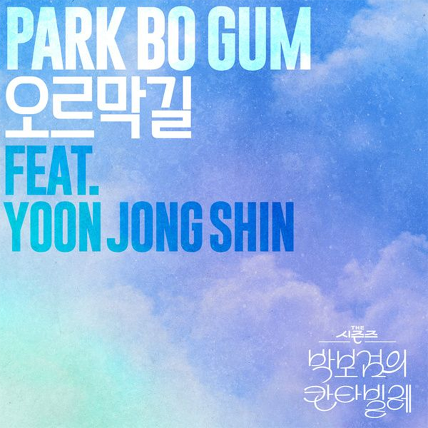

안녕하세요, 라보엠입니다.
2025년 8월, 음악 팬들과 드라마 시청자 모두가 기다리던 반가운 소식이 전해졌습니다. 배우 박보검과 가수 윤종신이 함께 부른 ‘오르막길’이 드디어 정식 음원으로 발매되었습니다. 이 노래는 KBS2 ‘더 시즌즈-박보검의 칸타빌레’에서 두 사람이 선보인 특별한 듀엣 무대가 큰 화제를 모으며, 시청자의 꾸준한 음원 요청 끝에 실제로 출시가 성사된 곡입니다.

듀엣 무대의 시작 – 편안함과 깊은 울림
‘오르막길’의 첫 무대는 2025년 4월 11일 ‘박보검의 칸타빌레’ 방송에서 처음 공개되었으며, MC 박보검과 원곡자 윤종신이 함께 부르는 모습에 무려 유튜브 조회수 약 400만 회, 인스타그램 릴스 약 1000만 회를 돌파하며 엄청난 인기를 보여주었습니다. 박보검의 맑고 담담한 보컬과 윤종신의 노련하면서도 다정한 화음이 어우러져, 보는 이들의 마음을 한순간에 사로잡았죠.
특히 이 무대는 단순한 커버가 아닌, 원곡자를 직접 초대해 더 특별한 감동을 전달했습니다. 윤종신 특유의 서정적인 선율 위에 박보검의 순수한 음색이 더해지며, ‘오르막길’은 새로운 감성을 입고 재탄생했습니다.
가사에 담긴 인생의 여정과 위로
이제부터 웃음기 사라질거야
가파른 이 길을 좀 봐
그래 오르기 전에 미소를 기억해두자
오랫동안 못 볼 지 몰라
완만했던 우리가 지나온 길엔
달콤한 사랑의 향기
이제 끈적이는 땀 거칠게 내쉬는 숨이
우리 유일한 대화일지 몰라
한걸음 이제 한걸음일 뿐
아득한 저 끝은 보지마
평온했던 길처럼 계속 나를 바라봐줘
그러면 견디겠어
사랑해 이 길 함께 가는 그대
굳이 고된 나를 택한 그대여
가끔 바람이 불 때만
저 먼 풍경을 바라봐
올라온 만큼 아름다운 우리 길
기억해 혹시 우리 손 놓쳐도
절대 당황하고 헤매지 마요
더 이상 오를 곳 없는
그 곳은 넓지 않아서
우린 결국엔 만나 오른다면
한걸음 이제 한걸음일 뿐
아득한 저 끝은 보지마 평
온했던 길처럼 계속 나를 바라봐줘
그러면 견디겠어
사랑해 이 길 함께 가는 그대
굳이 고된 나를 택한 그대여
가끔 바람이 불 때만
저 먼 풍경을 바라봐
올라온 만큼 아름다운 우리 길
기억해 혹시 우리 손 놓쳐도
절대 당황하고 헤매지 마요
더 이상 오를 곳 없는
그 곳은 넓지 않아서
우린 결국엔 만나
크게 소리 쳐
사랑해요
저 끝까지
‘오르막길’은 원래 윤종신이 2010년에 발표했던 곡으로, 인생의 힘든 시간을 나란히 걷는 두 사람의 마음을 담고 있습니다.
“이제부터 웃음기 사라질 거야… 가파른 오르막길, 함께 걸어요.”
힘든 시기에 서로에게 기대어 앞으로 나아가려는 메시지가 담담하게 전해져 오랜 시간 꾸준히 사랑받아온 노래입니다.
이번 박보검 버전 역시 “내게 기대, 언제라도 내가 뒤에 있을게” “함께라면 두렵지 않아”라는 포근한 위로가 절실한 목소리로 다가옵니다. 인생의 중턱, 조금 외롭고 두려운 순간에, 자신만의 음악적 언어로 듣는 이에게 힘과 희망을 전합니다.
공연 뒤 ‘음원 요청’ 쇄도, 마침내 발매
특별무대 직후, ‘정식 음원으로 듣고 싶다’는 팬들과 시청자들의 요청이 줄을 이었습니다. 음원 발매에 대한 뜨거운 응원은 KBS2 제작진을 움직였고, ‘더 시즌즈-박보검의 칸타빌레’ 마지막 회 방송을 기념해 2025년 8월 1일 오후 6시 모든 주요 음원사이트를 통해 정식 음원이 공개되었습니다. 박보검의 진행력과 음악적 열정, 그리고 윤종신의 따듯한 화음이 어우러진 이 곡은 시즌을 마무리하는 피날레이자, 팬들에게 남긴 마지막 선물로도 의미가 남다릅니다. 음원에는 방송 당시의 생생한 라이브 감동이 섬세하게 담겼습니다. 박보검의 섬세하고 진정성 있는 보컬과 윤종신의 안정적인 하모니가 서로를 감싸 안고, 듣는 이의 마음을 고요하게 흔듭니다. 이런 두 아티스트의 음색은 변화하는 계절, 인생의 오르막길을 걷는 모든 이에게 따뜻한 위로와 힘을 전합니다.
‘오르막길’은 박보검이라는 배우가 자신의 음악 세계를 펼친 또 하나의 기록입니다. ‘더 시즌즈 – 박보검의 칸타빌레’가 처음으로 배우 MC를 내세워 거둔 새로운 성공처럼, 이번 음원은 그 마지막 방송을 장식하는 상징적 작품으로 남았습니다. 각종 인터뷰와 팬미팅을 통해 음악에 대한 열정을 보여온 바 있습니다. 이번 ‘오르막길’ 발매로 배우와 아티스트라는 두 가지 얼굴을 가장 아름답게 연결하는 멋진 결과를 남겼습니다.
더 시즌즈-이영지의 레인보우에서 정인이 부른 오르막길
맺음말
박보검이 윤종신과 함께 부른 ‘오르막길’은, 지금 이 순간 살아가는 모두에게 함께 걷는 용기와 따듯한 응원을 건네는 노래입니다. 계절이 바뀌고, 인생도 조금씩 달라지지만, “함께라면 오르막길도 아름답다”는 메시지를 오래 기억하시길 바랍니다. 비가 오는 날, 힘든 밤, 혹은 소중한 사람과 함께 걷는 길에서 이 노래가 여러분에게 작은 등불이 되어주길 소망합니다.